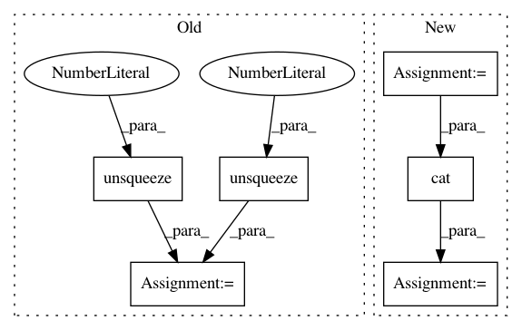

be91aa08bda8873d839a77932049e39b0ee11577,models/common/biaffine.py,PairwiseBiaffineScorer,forward,#PairwiseBiaffineScorer#Any#Any#,63
Before Change
self.W2.weight.data.zero_()
def forward(self, input1, input2):
res = self.W1(input1).unsqueeze(2) + self.W2(input2).unsqueeze(1) + self.W_bilin(input1, input2)
return res
class DeepBiaffineScorer(nn.Module):
def __init__(self, input1_size, input2_size, hidden_size, output_size, hidden_func=F.relu, dropout=0, pairwise=True):
After Change
self.W_bilin.bias.data.zero_()
def forward(self, input1, input2):
input1 = torch.cat([input1, input1.new_ones(*input1.size()[:-1], 1)], len(input1.size())-1)
input2 = torch.cat([input2, input2.new_ones(*input2.size()[:-1], 1)], len(input2.size())-1)
return self.W_bilin(input1, input2)
class DeepBiaffineScorer(nn.Module):
In pattern: SUPERPATTERN
Frequency: 3
Non-data size: 6
Instances
Project Name: stanfordnlp/stanza
Commit Name: be91aa08bda8873d839a77932049e39b0ee11577
Time: 2018-10-17
Author: qipeng@users.noreply.github.com
File Name: models/common/biaffine.py
Class Name: PairwiseBiaffineScorer
Method Name: forward
Project Name: cornellius-gp/gpytorch
Commit Name: 91b0d220c8e816766fd4565e1d2f5115d3afbefe
Time: 2018-10-12
Author: gpleiss@gmail.com
File Name: test/functions/test_inv_quad_log_det.py
Class Name: TestInvQuadLogDetBatch
Method Name: test_inv_quad_log_det_many_vectors
Project Name: cornellius-gp/gpytorch
Commit Name: 91b0d220c8e816766fd4565e1d2f5115d3afbefe
Time: 2018-10-12
Author: gpleiss@gmail.com
File Name: test/functions/test_inv_quad_log_det.py
Class Name: TestInvQuadLogDetBatch
Method Name: test_log_det_only